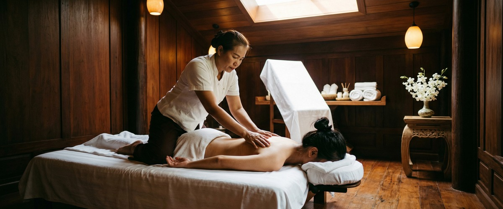
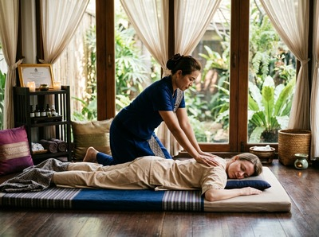
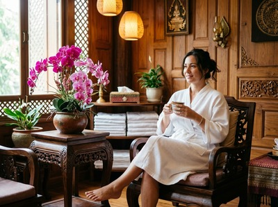

If you have been waking up flat, struggling to find enthusiasm for things you usually enjoy, or carrying a heaviness that simply will not shift, you are not alone.

Low mood and the blues are among the most common reasons people reach out to us at Serendipity Massage Therapy & Wellness in Glasgow. Thai massage, and therapeutic massage more broadly, offers a grounded, evidence-supported way to ease that weight and help your mind and body reset.
Low mood, sometimes called the blues, is a temporary but real shift in emotional state characterised by sadness, low energy, a reduced ability to feel pleasure, and a general sense of disconnection from daily life. It differs from clinical depression in duration and intensity, but it is not something to dismiss. It can follow periods of stress, disrupted sleep, overwork, seasonal change, or simply the accumulative toll of a demanding life. Physical tension and emotional strain are closely linked: when the body holds stress, the mind tends to follow.

The blues can affect anyone. They do not require a crisis or a diagnosis. Sometimes there is no obvious cause at all, which can make them feel even harder to shift.
Therapeutic massage works on the nervous system in measurable ways. A widely cited review published on PubMed examining massage therapy and mood-regulating biochemistry found that massage was associated with increased serotonin and dopamine levels and reduced cortisol. These are not minor effects: serotonin is the body's primary mood stabiliser, dopamine drives motivation and reward, and elevated cortisol is closely linked to sustained low mood and anxiety. Addressing all three in a single session represents a meaningful shift in your body's chemistry.
Thai massage, a traditional technique using assisted stretching, acupressure along sen energy lines, and rhythmic compression, is particularly well suited to lifting mood because it engages the whole body rather than isolated muscle groups. The physical release of deep-held tension has a direct calming effect on the autonomic nervous system, helping the body move from a state of chronic activation into genuine rest. Swedish massage and hot stone massage, with their long flowing strokes and sustained warmth, work through a similar mechanism, encouraging a parasympathetic response that quietens mental noise and eases emotional tightness.
Thai aromatherapy massage adds another layer. Therapeutic-grade essential oils selected for mood support, such as bergamot, lavender, and ylang ylang, interact with the limbic system via the olfactory pathway, reinforcing the calming, uplifting effects of the massage itself.
At Serendipity on Hope Street in Glasgow City Centre, every session begins with a quiet conversation about how you are feeling. If you are coming in with low mood, fatigue, or stress, your therapist will tailor the treatment accordingly, whether that means a traditional Thai massage with grounding pressure and assisted stretching, a Thai oil massage with slower, more restorative strokes, or a Thai aromatherapy session with oils chosen specifically for emotional balance. You can book your session online and indicate how you are feeling in the notes field so your therapist is prepared before you arrive.

The session itself is unhurried. You will not be rushed off the table. The therapists at Serendipity are trained to read what the body is holding and to respond to that, not to follow a fixed script. Many clients describe leaving with a clarity and lightness they had not felt in weeks.
Anyone carrying the cumulative weight of a demanding life stands to benefit, but particular patterns come up regularly. Office professionals in Glasgow's financial district working long hours under sustained pressure. People in caregiving roles who rarely put their own needs first. Anyone navigating a life transition: a relationship change, a career shift, a bereavement. Those affected by seasonal shifts in mood as daylight shortens. And people who already understand the value of regular massage and want to maintain emotional as well as physical wellbeing. The NHS guidance on managing low mood includes physical activity and self-care as meaningful supports. Regular massage fits naturally into that framework. If you are ready to start, you can book your appointment at Serendipity today.
Yes, and there is good evidence behind it. Research has shown that massage therapy is associated with increased levels of serotonin and dopamine, both of which regulate mood, alongside reductions in cortisol, the primary stress hormone. These biochemical changes are not just a feeling: they reflect a real shift in how your nervous system is operating. A regular session at Serendipity can be a meaningful part of managing your emotional wellbeing.
It depends on what your body needs. Traditional Thai massage is effective for releasing deep physical tension that can drag mood down, while Thai oil massage and Swedish massage offer a more restorative, calming experience through slow, flowing strokes. Thai aromatherapy massage adds the mood-supporting effects of therapeutic essential oils. Your therapist at Serendipity will help you choose based on how you are feeling when you arrive.
Many people feel a noticeable shift in mood within hours of a session, often describing it as a sense of calm, mental clarity, or reduced heaviness. The effects can last several days. For sustained benefit with persistent low mood, regular sessions are more effective than a one-off treatment, and many of our Glasgow clients build massage into their monthly routine for exactly this reason.
No. Massage therapy is a valuable complement to other forms of support, not a substitute for professional mental health care. If your low mood is persistent, severe, or significantly affecting your daily functioning, please speak to your GP. Massage works well alongside talking therapies, lifestyle changes, and medical treatment, but it is not a clinical intervention for diagnosed depression.
For emotional wellbeing, fortnightly sessions tend to produce the most consistent results. Monthly sessions are a good maintenance rhythm once you are feeling more stable. Your therapist at Serendipity can advise you on frequency during your first session, based on what you are experiencing and what your body responds to.
Hot stone massage, which combines the therapeutic warmth of basalt stones with skilled massage technique, is particularly effective for people whose emotional state is tied to physical tension and fatigue. The sustained heat encourages deep muscle release and activates the parasympathetic nervous system, producing a sense of profound calm that many clients find especially helpful when they are feeling depleted or emotionally flat.